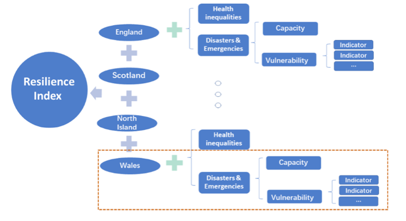
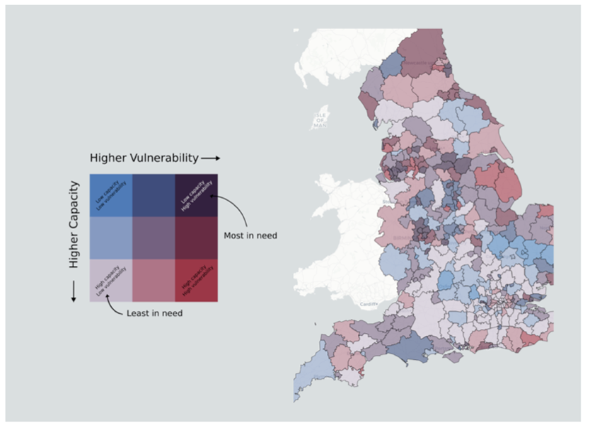

Miss Ruonan Zhang, a dedicated MSc student from King’s College London (KCL), undertook an internship with the Strategic Insight & Foresight team at the British Red Cross (BRC) during the academic year 2021/22. Under the guidance of Mr. Michael Page, Ruonan was entrusted with the crucial task of assisting to develop the Resilience Index, a tool aimed at identifying local authorities in the UK that might be more vulnerable during challenging situations.
Drawing upon the rigorous training and education she had received from MSc Urban Informatics programme, Ruonan was instrumental in the design and formulation of the Resilience Index. It stands as a testament to Ruonan’s ability to transform raw data into actionable insights, by sharing the BRC with her point of view on a clear design workflow for such humanitarian efforts.
Ruonan’s unwavering commitment to harnessing the power of data analytics, combined with the supportive environment at KCL, resulted in tangible outcomes that promise to have a lasting impact on communities. Her work with the British Red Cross not only showcases the practical application of her academic knowledge but also highlights the potential of data-driven strategies in shaping humanitarian interventions. Through the contributions, Ruonan has exemplified the essence of KCL’s educational ethos, demonstrating how academic knowledge can be channelled into meaningful real-world solutions.
Using Data to Help People
Data serves as a guiding compass, directing actions and informing decisions. Recognising its paramount importance, the British Red Cross initiated the development of the Resilience Index, a strategic tool designed to enhance their future planning. Ruonan Zhang, with her academic background, was entrusted with this meaningful project. Her primary responsibility involved sourcing and collating data, under the supervisions, from four nations with diverse repositories, to ensure the accuracy and relevance of diversified-sourced data fusions.
By utilising R programming language, Ruonan systematically processed and structured the gathered data. This helped to streamline and facilitate a more intuitive understanding for the BRC team. However, the Resilience Index is not merely a compilation of data points. It’s a holistic tool that combines various indicators to assess the resilience of different regions. Ruonan’s academic expertise was contributable in this endeavor in ensuring the index’s being comprehensive and user-friendly. Her diligent efforts have helped to refine the tool in enhancing its ability to identify areas requiring heightened support.
Helping Communities Get Ready
The Resilience Index, though in its nascent stages, holds significant potential. It serves as a strategic roadmap, pinpointing areas of heightened vulnerability, optimising BRC’s resources planning to make sure they are judiciously allocated to regions most in need. Ruonan’s contributions to this project not only replying on the quantitative aspect, but also taking into consideration of communities engagement, making such aid is not purely data-driven but also tailored to genuine needs.
Ruonan’s efforts have helped to deliver a transformative approach for the BRC. With the Resilience Index at their disposal, the BRC possess a clearer perspective on where to channel their resources and interventions. This refined approach promises more effective aid delivery, ensuring communities receive timely and appropriate support. Ruonan’s dedication to the project has further supported the team’s work on preparedness, contributing to its accelerated response time and enhanced its community outreach.
Learning and Making a Difference
Ruonan Zhang’s placement with the Strategic Insight & Foresight team at the BRC marked a pivotal juncture in her journey as an emerging “data scientist”. This real-world project, centred around the Resilience Index, offered her invaluable insights into the intricacies of large-scale project management within a renowned organization. The supportive environment at the British Red Cross facilitated her growth, allowing her to navigate every stage, from data collection to the final presentation, with increasing proficiency.
Throughout this placement, Ruonan not only honed her technical skills, such as coding and structured data analysis, but also gained a deeper understanding of the real-world application of academic knowledge. The Resilience Index stands as a testament to her dedication, promising to benefit numerous individuals across the UK. With this experience, Ruonan has fortified her confidence and clarity regarding his future aspirations, ready to apply her learnings to make even more significant impacts in her Data Scientist job at Lynchpin.
(Editor: Xianghui Zhang, Yijing Li)

